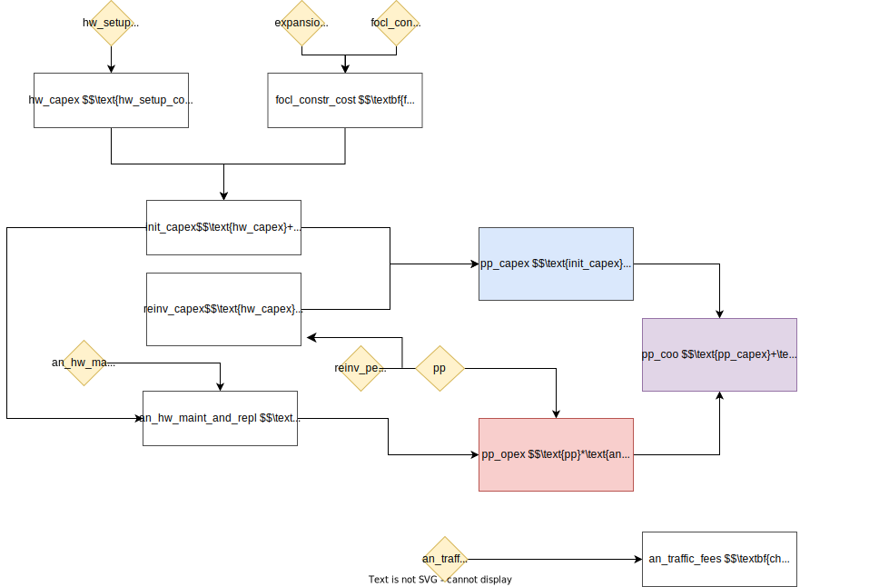
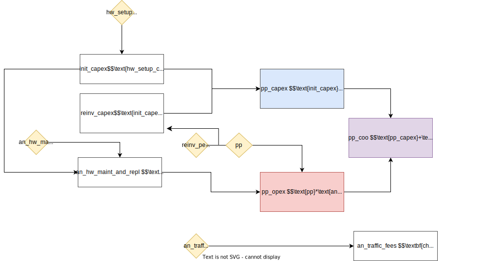
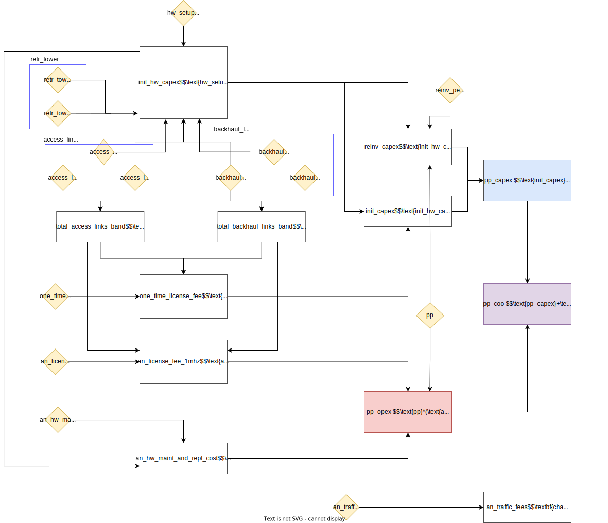
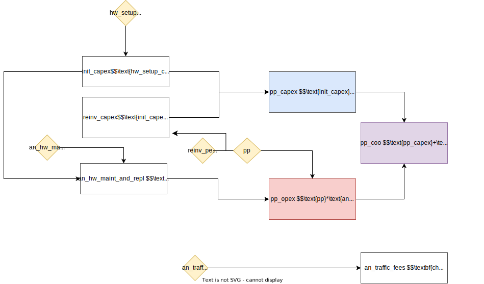

Models
Demand
The demand model estimates the internet demand for each point of interest by creating 1 km buffers around the location and counting the population living within those buffers. Population data is sourced from WorldPop, a leading provider of high-resolution global population datasets. To estimate internet demand, the model multiplies the population within the buffer by the scenario parameter Demand per user (Mbps).
Fiber
The fiber path model identifies the shortest and most cost-effective paths for connecting unconnected points of interest (POIs) to the existing optical fiber network using the road network. By minimizing the total length of fiber required, this model reduces overall deployment costs while efficiently extending connectivity.
One of the key features of the model is economies of scale: POIs can act as relay points for neighboring POIs, enabling connectivity without each one needing to connect directly to a transmission node. This approach optimizes resource usage and simplifies network expansion.
The model uses Kruskal's algorithm to compute a Minimum Spanning Tree (MST). The graph consists of the road network as edges and POIs as vertices. Connections between POIs and the road network are established using straight-line links. The MST ensures the minimal fiber path necessary to connect all relevant points while adhering to road network constraints.
Feasibility
Fiber is considered a feasible technology for a POI if the algorithm is able to connect that POI to the fiber network, given the algorithm constraints - particularly the maximum length of fiber allowed per connection. In practice, fiber will not be feasible for POIs that are very far away from transmission nodes or other POIs.
Required data inputs
- Points of interest
- Transmission nodes
Model parameters
| Description | Example value |
|---|---|
| Maximum connection length (meters) | 50,000 |
| Annual hardware maintenance and replacement costs (USD per year, as a fraction of hardware CAPEX) | 0.1 |
| Access bandwidth cost (USD per Mbps per year) | 31.8 |
| Transit bandwidth cost (USD per Mbps per year) | 12 |
| Fiber cost (USD per km) | 8,000 |
| Hardware setup cost (USD per POI) | 500 |
| Hardware refresh after (Years) | 3 |
Cost model
The fiber cost model is summarized below. The CAPEX cost for each POI is dependent on the amount of fiber required to connect that school.

Cellular
The cellular model relies on coverage analysis. In this version of the toolkit, coverage is determined by the distance from a cell tower. Each tower is assumed to provide coverage within a specified maximum radius, which is controlled by the model parameter Coverage radius around cell tower (meters).
Feasibility
Cellular is considered a feasible technology for a POI if it is within close enough distance to a cell site.
Required data inputs
- Points of interest
- Cell sites
Model parameters
| Description | Example value |
|---|---|
| Coverage radius around cell tower (meters) | 1,000 |
| Reinvest into hardware after (USD per year, as a fraction of hardware CAPEX) | 0.1 |
| Access ISP fees (USD per Mbps per year) | 24 |
| Annual traffic fee (USD per Mbps per year) | 12 |
| Hardware setup cost (USD per POI) | 80 |
| Reinvest into hardware after (Years) | 3 |
Cost model
The cellular cost model is summarized below.

Point-to-point
The point-to-point model evaluates the feasibility of establishing radio links between points of interest (POIs) and cell sites using visibility analysis. This involves assessing whether the line of sight between a POI and a cell site is obstructed, ensuring that only feasible links are considered for deployment. The analysis uses open topography data from the Shuttle Radar Topography Mission (SRTM), which provides 30-meter resolution elevation data. The maximum visibility limit is set at 35 kilometers.
Feasibility
Point-to-point microwave is considered a feasible technology for a POI if at least one cell site (or another POI) is visible from the POI.
Required data inputs
- Points of interest
- Cell sites
Model parameters
| Description | Example value |
|---|---|
| Bandwidth per access link (MHz) | 10 |
| Access link cost (USD per hop) | 831.59 |
| Annual hardware maintenance and replacement costs (USD per year, as a fraction of hardware CAPEX) | 0.004 |
| Access ISP fees (USD per Mbps per year) | 24 |
| Annual recurring license fee for 1MHz (USD per MHz per year) | 100 |
| Annual traffic fee (USD per Mbps per year) | 12 |
| Bandwidth per backhaul link (MHz) | 20 |
| Backhaul links (Links) | 0 |
| Backhaul links cost (USD per hop) | 2,825.07 |
| Hardware setup cost (USD per POI) | 500 |
| One time license fee for 1MHz (USD per MHz) | 500 |
| Reinvest into hardware after (Years) | 5 |
| Retransmission towers cost (USD per tower) | 13,000 |
| Retransmission towers (Towers) | 0 |
Cost model
The point-to-point cost model is summarized below. There are added complexities in this cost model due to the presence of additional physical infrastructure, such as retransmission towers and backhaul links - as well as additional one-time and annual license fees.

Satellite
There is no specific analysis used to assess the feasibility of satellite connections. They are considered always feasible in this version of the toolkit.
Feasibility
Satellite connections are always considered feasible.
Required data inputs
- Points of interest
Model parameters
| Description | Example value |
|---|---|
| Annual hardware maintenance and replacement costs (USD per year, as a fraction of hardware CAPEX) | 0.04 |
| Access ISP fees (USD per Mbps per year) | 24 |
| Annual traffic fee (USD per Mbps per year) | 12 |
| Hardware setup cost (USD per POI) | 3,000 |
| Reinvest into hardware after (Years) | 5 |
Cost model
The satellite cost model is summarized below.
